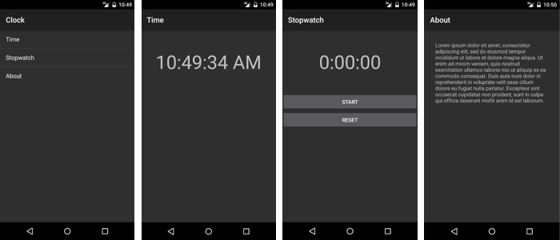

Durée
10 minutes
Objectifs
L'objectif principal de ce laboratoire est d'ajouter la Stack Navigation à une application partiellement écrite. Vous allez travailler sur une application Horloge qui fournit les trois pages suivantes: heure actuelle , chronomètre , et à propos de . Votre travail consiste à construire la structure principale de navigation. Remarquez la list-view dans la première capture d'écran. En cliquant sur un des éléments de la liste vous allez naviguer vers la page appropriée.
Challenge
Vous pouvez utilisez la description suivante pour réaliser l'exercice.
- Ouvrez la solutionClock.
- Ouvrez MainActivity.cs.
-
Complétez l'implémentation de la méthode
OnMenuClick. Utilisez unIntentpour naviguer ver l'activité appropriée en fonction de l'élément sur lequel on cliqué. - Exécutez et testez votre application.
Steps
Below are the step-by-step instructions to implement the exercise.
Examine the starter code
The supplied code implements the entire Clock app except for the Stack Navigation part. Before you begin coding, the steps here will lead you through an examination of a few key parts of the provided code.
- Open the Clock solution from the Lab.Start folder.
- Open Resources/layout/Time.axml in source-code view.
-
Notice that the UI to display the current time is just a
TextView. The string it displays is updated every second from the code-behind. - Open TimeActivity.cs.
-
Note that the
TimeActivityis an Activity. The implementation uses a timer to update the UI once per second. -
The other Activities (
StopwatchActivityandAboutActivity) are similar. If you have extra time, feel free to examine them; however, there is nothing there that you need to know to continue with the exercise. - Open Resources/layout/Main.axml in source-code view.
-
Notice the
ListView. This is the navigation "menu". - Open MainActivity.cs.
-
The
OnCreatemethod initializes theListViewso it has one entry for each of the three app functions: time, stopwatch, and about. When the user clicks on one of the list items, you will need to write code to navigate the app to the corresponding activity.
Implement Stack Navigation
Here you will code Stack Navigation. You will create an Intent and start an Activity when the user clicks on the navigation menu.
-
Open MainActivity.cs and locate the
OnMenuClickmethod. All your work will be done inside this method. -
The
ListViewwill pass you the index of the clicked item in thePositionproperty of the EventArgs. You will need to retrieve this value so you can decide which Activity you will navigate to. -
Create an
Intentto navigate to the Activity the user selected. TheIntentclass has several constructors; you should use the version that takes two arguments: aContext(your Activity is aContext) and aType. Pass a differentTypeobject based on the value of thePositionproperty in the EventArgs. Below is some generic code that shows how to create anIntent.var intent = new Intent(this, typeof(TargetActivity));
-
Call the
StartActivitymethod and pass it theIntent. - Run the app to test your work. Click on one of the items in the list. Use the Android Back button to return to the Main screen.
Résumé
Cet exercice vous a demandé d'utiliser les Activités et les Intents pour implémenter la stack navigation.
La création d'un Intent et l'appel de StartActivity permet d'effectuer une navigation vers l'avant.
La nouvelle activité a été automatiquement ajoutée à la pile arrière Android. Le bouton Android Précédent a
automatiquement renvoyé votre application à l'activité précédente .